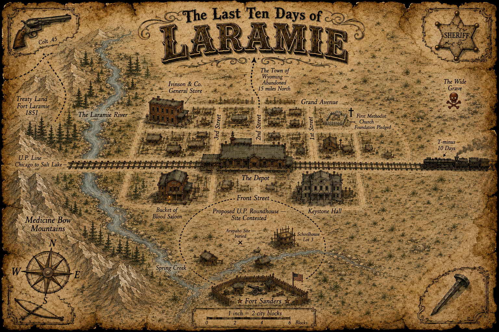

In ten days, the Union Pacific Railroad Commissioner arrives in Laramie to decide whether the town will be granted the great roundhouse and the rail infrastructure that comes with it. That decision will mark a turning point for Laramie — and determine its fate.
Who rode into Laramie — the player characters in their own right. Tap a card for the full background.
The company's own log of each game session, recorded plainly. A session may cover one in-world day, several, or only part of one.

Open a peer-to-peer tabletop, lay down the frontier grid, and move every soul on the map. The host keeps the state; no account or cloud ledger required.
Open the table →Arms, powder, blades, explosives, and one Gnomish marvel — every implement of work and violence, with prices and particulars for the careful buyer.
Browse the goods →The tap, the bottle, and the comforts of vice. Every drink carries a boon and a bane both.
Step up to the bar →How Laramie differs from the book: money & coin, drink & the Cups Track, wounds, guns & range, cover, and frontier knacks.
Learn the rules →Step up to the felt and turn the dice loose — a full set of 3D rolling bones with modifiers, advantage, and a running tally. Or pick any weapon from the Front Street arsenal and roll the attack: to-hit, damage, crits, and all.
Roll the dice →